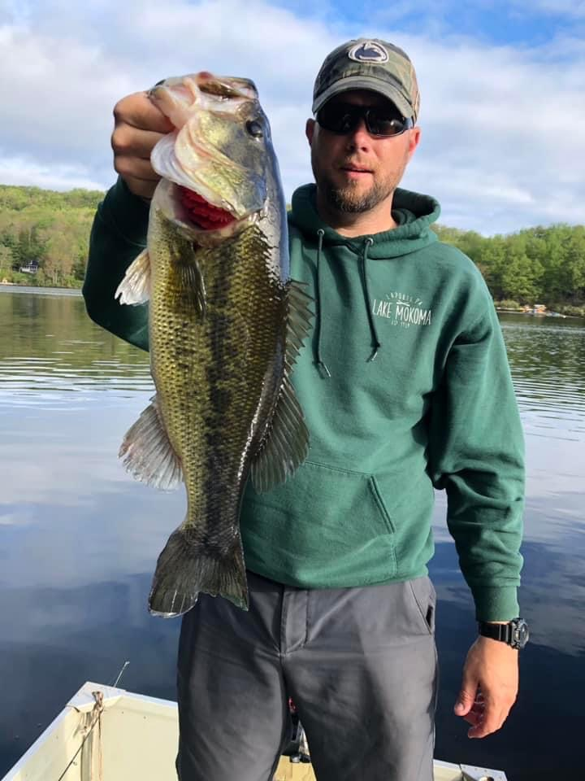

Starting fishing in Lake Mokoma is fairly simple and doesn’t require much equipment. As a complete beginner, you don’t even need a rod or reel, but you can move up to more advanced fishing techniques.
Without a rod or reel, you can make a handline using some fishing line (I prefer Stren monofilament 6-12 lb test but any will work). Use the holder the line comes in as the ‘reel’ and tie a jig to the end with a simple knot. My favorite is a barrel knot which works great for any form of fishing and is how I tie all lures. Now that you’ve created a handline, all you need to do is drop it in the lake, underneath a dock or off of a boat, and try to replicate the motion of a fish. Then, maybe you can catch one.
If you move beyond the handline, you can move up to closed-face reels or spinning reels. Closed-face reels are easy to use but still work well, especially for bait fishing. All you have to do is push the button, throw your arm like a ball, and release the button midway through. Spinning reels are slightly more difficult to use. You have to hold the line and open the bail then release the line at the apex of the cast. Despite the added difficulty, these reels are better than closed-faces and are great for plastics and even spinnerbaits and crankbaits. Finally, baitcasters are the most difficult. Much like the closed-face reel, you have to push the button and release it at the apex. However, you have to use your thumb to slow down the line before it hits the water and change the settings to the lure you are using. These reels are great for spinnerbaits and crankbaits. Baitcaster rods and closed-face rods are similar as both have a trigger with reels and eyelets on top whereas the spinning rod has no trigger with the reel and eyelets on the bottom. With these reels, you can experiment with other types of line. I like to use a monofilament backing, then braid for most of the reel, and have a monofilament or even a fluorocarbon leader. Each different line is connected by a uni knot. This setup is very strong and very difficult for fish to see, but it is slightly overkill. Brands that I would recommend are Ugly Stick for rods (a combination pack is a great starter for each type) and Stren for line.
Now that you have the basics of rods and reels, you need to know what lures are the best. The first is live bait. Most are rigged with a simple hook and bobber. The bobber keeps the bait off the bottom of the lake and submerges when a fish tugs on it to indicate a catch. On the hook, worms or minnows are the most common. Fishing with bait works great but it can be difficult to catch larger fish and find bait. Furthermore, live bait can sometimes be harmful to fish because of how aggressively they attack it.
So, artificial lures are used. The first type of artificial lures are plastics. These lures are rigged on hooks similar to live bait, but with no bobber. Weight can be added to force the lure down to the bottom, where fish often are. There are multiple ways to rig plastics onto the hook such, the most common being on a jig head. Jigs can catch any kind of fish, are easy to use, and get the lure down to the bottom. Other types are Texas rigs, California rigs, and wacky rigs. There are many different types of plastics but my personal favorite in this lake is a wacky rigged senko, which replicates a large worm. Sluggos, which represent an injured fish, and any salamander replica also work well. I find that dragging these lures along the bottom or letting them sit near structure are the best strategies. Any color can work but my favorites are purple or watermelon red flakes. You can get name brands such as Yamamoto but I find Zoom lures work just as well and are cheaper. Plastics are very subtle and are great for catching large fish in the dog days of the summer but aren’t as effective when fish are more aggressive.
So, other, more flashy lures are used. Fish hunt by sight and smell, which is how fish see plastics, but they can also feel vibrations in the water. Spinnerbaits and crankbaits take advantage of this. My personal favorites are spinnerbaits which trigger aggressive reactions and don’t get stuck as often as other lures. Reeling them through lily pads or in shallow water will catch fish. Chatterbaits, which are similar to spinnerbaits but more jig-like, are also very effective. I find the best colors are chartreuse or tiger colored. Crankbaits get stuck way more often but they dive to the bottom better than spinnerbaits. Rapala is the best brand of these. All you need to do is cast then reel in the crankbait. These lures are both really fun to use but require an aggressive response. Surface lures are fun and don’t require as much of an aggressive fish. Jitterbugs, jerkbaits, and poppers all represent injured fish. A quick jerk then letting the lure sit makes the lure seem like an injured fish to predators. These can work very well and are very fun when you get a bite. Buzzbaits reel fast across the water and are designed to anger fish. They are very fun to use but don’t catch a lot.
The final piece of equipment is a boat. You can just fish from a dock and catch a lot of fish. However, you can access more of the lake with a boat. A kayak or canoe will both work and have room for all the gear. Kayaks specific for fishing are more stable and have storage for rods and gear. Fishing from row boats which can have an electric motor, provide the most room and easiest movement while fishing. You can experiment with different types of lures, rod and reel combinations, boats, places, and fish to find what you like best and what works best for you. Personally, I have a spinning rod with a wacky-rigged senko and a baitcaster with a spinnerbait, almost at all times.